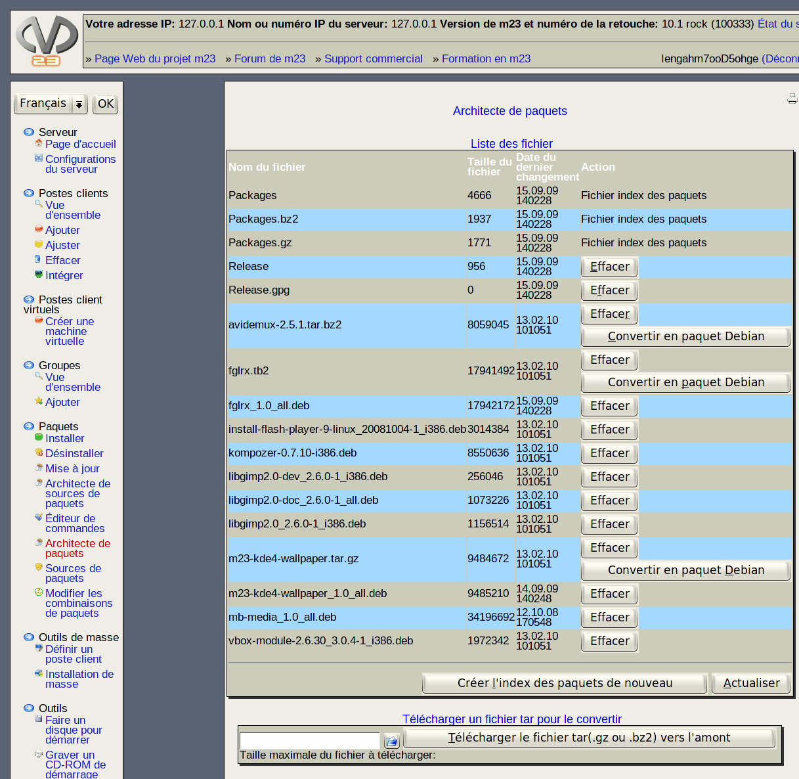

Le Constructeur de paquets integré dans m23 est un outil comfortable de construction des paquets Debian directement à partir de l'environnement graphique de m23. Ces paquets peuvent etre installés comme tout autre paquet tout en étant constitués de fichiers et/ou d'arborescences de fichiers.
Les paquets seront construits à partir d'archives compressées au format tar compressé par bzip2 ou gzip. Les droits d'accès des fichiers et répertoires seront conservés. Les paquets Debian créés sont indépendents des distributions ou des versions de distribution et peuvent être utilisés sur des postes client Debian, Ubuntu et Kubuntu.
La création d'un paquet se déroule de la façon suivante:
- L'enregistrement du fichier tar dans le répertoire /m23/data+scripts/extraDebs/ peut être effectué avec scp ou en utilisant le téléchargement de fichiers intégré Téléverser un fichier tar pour le convertir.
- Après enregistrement du fichier, cliquez sur Actualiser, s.v.p., pour qu' il apparaisse dans la Liste des fichier.
- Sélectionnez le fichier à transformer, puis cliquez sur Convertir dans un format de paquet Debian à côté du nom du fichier. L'actualisation des fichiers index des paquets s'effectue automatiquement et vous pouvez utiliser la source de paquets instantanément.
Sous-sections
root
2015-09-06